무선설비산업기사 (2010-02-21 기출문제)
1과목: 디지털 전자회로
1. 단상 전파정류기의 평균값은 단상 반파정류기의 평균값에 몇 배가 되는가?
- 1배
- 2배
- 4배
- 8배
(정답률: 89%)

2. 다음 중 정류회로에서 리플 함유율을 감소시키는 방법으로 적합하지 않은 것은?
- 입력전원의 주파수를 낮게 한다.
- 반파정류회로 보다는 전파정류회로를 사용한다.
- 콘덴서 입력형 평활회로에서 콘덴서 용량을 크게 한다.
- 초크 입력형 평활회로에서 초크의 인덕턴스를 크게 한다.
(정답률: 78%)
3. 리플 전압이란 무엇을 의미하는가?
- 전압의 직류분
- 정류된 전압의 직류분
- 정류된 전압의 교류분
- 교류전압
(정답률: 63%)
4. 저주파 증폭기의 출력 전압이 100[V], 제2고조파의 전압이 4[V], 제3고조파의 전압이 3[V]이다. 이때 왜율은 어떻게 되는가?
- 5[%]
- 10[%]
- 16[%]
- 20[%]
(정답률: 53%)
5. 다음 중 부궤환 증폭회로의 특징이 아닌 것은?
- 이득 증가
- 비선형 일그러짐 감소
- 잡음 감소
- 고주파 특성의 개선
(정답률: 80%)
6. 전압이득이 50인 저주파 증폭기가 약 10[%] 정도의 왜율을 가지고 있다. 이를 2[%] 정도로 개선하기 위하여 걸어주어야 하는 부궤환율 β는 얼마이어야 하는가?
- 10
- 4
- 0.02
- 0.08
(정답률: 73%)
7. 다음 연산회로의 출력 eo은 얼마인가? (단, R1 = R2 = Rf = 1[kΩ]이다.)
- 19[V]
- 10[V]
- -15[V]
- -20[V]
(정답률: 74%)
8. 다음 중 발진기에 이용되는 것은?
- 정궤환
- 부궤환
- 홀효과
- 펠티어 효과
(정답률: 86%)
9. 다음은 이상형 RC 발진기이다. 발진 주파수 fa는 얼마인가?
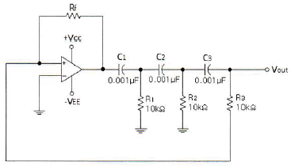
- 6.5[kHz]
- 7.5[kHz]
- 8.5[kHz]
- 9.5[kHz]
(정답률: 48%)
10. vC = 20 cos ωC t[V]의 반송파를 vS = 14cos ωSt[V]의 신호파로 진폭 변조했을 때 변조도는 몇 [%]인가?
- 60[%]
- 70[%]
- 80[%]
- 90[%]
(정답률: 71%)
11. 다음 설명과 같은 특징을 갖는 변조 방식은 어느 것인가?
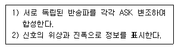
- BPSK
- DPSK
- QAM
- QPSK
(정답률: 89%)
12. 다음 중 멀티바이브레이터의 설명으로 틀린 것은?
- 출력에 고차의 고조파를 포함한다.
- 모든 멀티바이브레이터의 구성은 교류적으로 결합되어 있다.
- 단안정 멀티바이브레이터의 구성은 AC와 DC로 구성되어 있다.
- 회로의 시정수에 의해서 출력 파형의 주기가 결정된다.
(정답률: 63%)
13. 다음 회로에서 D1, D2 다이오드가 동시에 차단 상태일 때의 조건은? (단, V1<V2이다.)
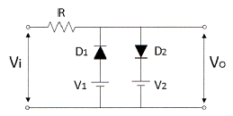
- vi ≥ V2
- V1 < vi < V2
- V2 < vi < V1
- vi ≤ V1
(정답률: 72%)
14. 논리게이트 진리표가 다음과 같은 출력일 때, 논리식으로 바른 것은?
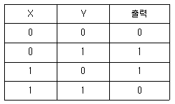
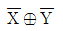
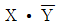
- XㆍY
- X⊕Y
(정답률: 85%)
15. 다음과 같은 파형을 클럭형 T 플립플롭에 가하였을 때, 올바른 출력 파형은로 옳은 것은?
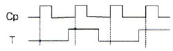
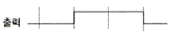
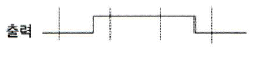
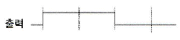
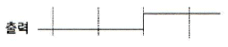
(정답률: 78%)
16. 다음 중 비동기식 카운터에 대한 설명으로 틀린 것은?
- 동기식 카운터에 비해 입력신호의 전달지연 시간이 길다.
- 동기식에 비해 논리상의오차 발생 비율이 많다.
- 구조상으로 동기식에 비해 회로가 간단하다.
- 같은 클럭펄스에 의해 트리거가 된다.
(정답률: 67%)
17. 여러 개의 입력선 중에서 하나를 선택하여 출력선에 연결하는 조합논리 회로를 무엇이라고 하는가?
- 멀티플렉스(Multiplexer)
- 인코더(Encoder)
- 멀티플랙싱(Multiplexing)
- 채널(Channel)
(정답률: 87%)
18. 2×4 디코더 회로도로 옳은 것은?
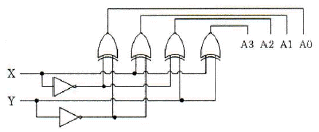
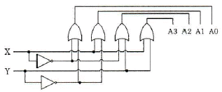
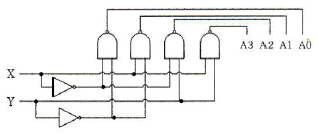
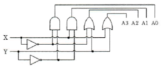
(정답률: 79%)
19. 다음은 비밀번호를 입력하는 회로에서 비밀번호는 무엇인가?
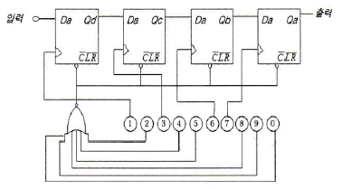
- 2, 4, 5, 8, 9, 0
- 1, 3, 8, 9
- 2, 5, 9, 0
- 1, 3, 6, 7
(정답률: 88%)
20. BCD 연산 6+7의 연산 결과로 옳은 것은?
- 0 1101 (BCD)
- 1 0011 (BCD)
- 1 1101 (BCD)
- 1 1101 (BCD)
(정답률: 72%)
2과목: 무선통신 기기
21. DSB와 비교했을 때 SSB 통신 방식의 특징이 아닌 것은?
- 점유주파수 대역폭이 반으로 감소한다.
- S/N비가 개선된다.
- 적은 송신 전력으로 통신이 가능하다.
- 선택성 페이딩 및 근접 주파수의 영향이 많다.
(정답률: 61%)
22. 주파수 변조(FM) 통신 방식에서 변조지수는 어떻게 표현되는가? (단, 정보신호 주파수=fm, 최대주파수편이=Δf)
- Δf / fm
- fm / Δf
- 2Δf / fm
- 2fm / Δf
(정답률: 66%)
23. 위상 변조를 하고자 하는 경우, 주파수 변조회로를 사용한다면 어떤 회로가 더 필요한가?
- 미분 회로
- 정류 회로
- 디엠퍼시스 회로
- 리미터 회로
(정답률: 61%)
24. 그림과 같은 신호 공간 다이아그램을 나타내는 변조 방식은 어느 것인가?
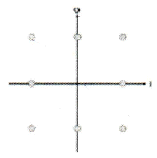
- ASK
- BPSK
- FSK
- QAM
(정답률: 82%)
25. 다음 중 이동통신 시스템의 송신기의 상호변조 특성을 경감하는 방법 중 해당되지 않는 것은?
- 상호간의 결합 감쇄량을 크게 정한다.
- 상호간의 반사특성을 증폭시킨다.
- 동일 건물내에서 송신기 군의 주파수 간격을 넓게 정한다.
- 아이솔레이터 등을 삽입하여 혼입 장애파의 레벨은 저하시킨다.
(정답률: 49%)
26. 위성통신에서 다원접속에 해당되지 않는 것은?
- TDMA
- FDMA
- CDMA
- WDMA
(정답률: 68%)
27. 코드분할 다원 접속에서 최대 전송률을 증가시키기 위해서는 무엇을 해야 하나?
- 신호 전력 또는 주파수 대역폭을 증가시켜야 한다.
- 신호 전력 또는 주파수 대역폭을 감소시켜야 한다.
- 신호 전력을 감소시키고 주파수 대역폭을 증가시켜야 한다.
- 신호 전력을 증가시키고 주파수 대역폭을 감소시켜야 한다.
(정답률: 73%)
28. 이동 통신 시스템에서는 셀과 셀을 오가면서 통화를 할 수 있도록 해주는 것을 핸드오프(Hand-Off)라고 하는데 그 종류가 아닌 것은?
- 하드 핸드오프(Hard Hand-Off)
- 하더 핸드오프(Harder Hand-Off)
- 소프트 핸드오프(Soft Hand-Off)
- 소프터 핸드오프(Softer Hand-Off)
(정답률: 84%)
29. 축전지에서의 백색 황산연의 발생방지 방법 중 틀린 것은?
- 충전 후 오래 방치하지 않아야 한다.
- 과 충전을 하지 않아야 한다.
- 충전이 완전히 되도록 한다.
- 과대한 전류로 방전하지 말아야 한다.
(정답률: 68%)
30. 다음 중 축전지의 충전의 종류가 아닌 것은?
- 단순 충전
- 평상 충전
- 균등 충전
- 부동 충전
(정답률: 78%)
31. UPS도 일종의 인버터 방식을 이용한 것인데 이중 인버터의 유형을 구분하는 요소에 해당하지 않는 것은?
- 전원의 형태
- 전원의 구성방식
- 제어 방식
- 출력 상수
(정답률: 63%)
32. 다음 그림에서 (A), (B), (C)에 들어갈 파형의 종류를 올바르게 나타낸 것은? (단, (C)는 출력제어방식이 PWM인 인버터 출력이다.)
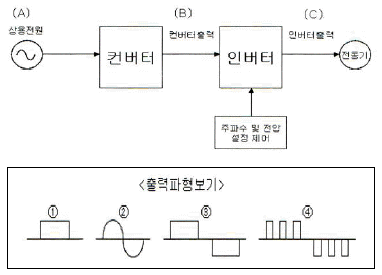
- A=①, B=②, C=③
- A=②, B=①, C=④
- A=①, B=②, C=④
- A=②, B=①, C=③
(정답률: 74%)
33. FM 수신기의 주파수 변별기의 특성을 측정하는 방법은 어느 것인가?
- 입력 전압의 변화에 대한 직류 출력 전압의 변화
- 입력 주파수 변화에 대한 직류 출력 전압의 변화
- 입력 전압의 변화에 대한 출력 주파수 변화
- 입력 주파수 변화에 대한 출력 주파수 변화
(정답률: 56%)
34. 다음은 접지공중선의 실효 저항 측정 방법이다. 맞지 않은 것은?
- 의사공중선법
- 저항삽입법
- Q미터법
- 실효리액턴스법
(정답률: 71%)
35. 무선 송신기의 신호대잡음비(S/N) 측정시 필요하지 않는 측정기는?
- 변조도계
- 오실로스코프
- 직선 검파기
- 저주파 발진기
(정답률: 88%)
36. CDMA 및 WCDMA 휴대단말기를 포함한 대부분의 송수신기에서 사용되는 것으로서 수신신호의 레벨변화와 온도 등에 의한 출력레벨의 변동이 없도록 제어하는 장치는 무엇인가?
- AVR
- AGC
- LNA
- PLL
(정답률: 67%)
37. 어느 수신기의 입력에 10[μV]의 전압을 인가했더니, 출력전압이 10[V]였다. 이때 수신기의 감도는 몇 [dB] 인가?
- 60[dB]
- 80[dB]
- 100[dB]
- 120[dB]
(정답률: 75%)
38. 수신기의 종합특성을 결정하는 파라미터로서 혼신 및 간섭 등을 어느 정도까지 분리 및 제거할 수 있는가의 능력을 나타내는 것은 무엇인가?
- 감도
- 선택도
- 충실도
- 안정도
(정답률: 82%)
39. 반파 정류회로의 출력단에 부하를 연결하고 오실로스코프를 이용하여 파형을 측정하였더니, 다음과 같이 DC 전압 측정파형이 측정되었다고 하면 이 정류회로의 맥동률은 얼마인가?
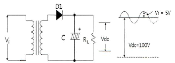
- 약 2.8[%]
- 약 3.5[%]
- 약 4.3[%]
- 약 5.0[%]
(정답률: 52%)
40. 코올라우시 브리지를 사용하여 전해액의 저항이나 접지저항을 측정할 때, 직류전원 대신 교류전원을 사용한다. 전원을 직류로 사용하지 않는 이유로 가장 알맞은 것은?
- 전극 내부 저항이 감소하기 때문에
- 전극 표면에서 정전기 발생을 막기 위해서
- 전극 표면의 발열을 방지하기 위해서
- 전극 표면의 분극작용을 방지하기 위해서
(정답률: 81%)
3과목: 안테나 개론
41. 다음 중 위상속도와 군속도의 관계로 가장 적합한 것은? (단, Vp: 위상속도, Vq: 군속도, C: 광속도)
- VpㆍVq = C
- VpㆍVq = C2
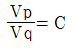
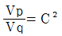
(정답률: 64%)
42. 공간의 어느 점에 있어서 자속밀도 B가 시간적으로 변화하는 경우에 성립하는 식은? (단, E는 그 근방에 발생하는 전계이다.)
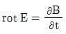
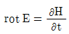
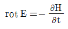
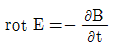
(정답률: 58%)
43. 급전선의 무왜곡 조건식을 옳게 표시한 것은?
- C/G = R/L
- G/C = R/L
- 2C/G = R/L
- C/2G = R/L
(정답률: 72%)
44. 특성임피던스가 200[Ω]인 동축케이블의 무손실 선로에서 50[Ω]의 부하를 접속할 때, 이 선로의 정재파비는?
- 4
- 4.6
- 0.6
- 3.2
(정답률: 74%)
45. 스미스(Smith) 차트의 궤적에 대한 설명으로 바르지 못한 것은?
- 어드미턴스 차트의 원을 따라 중심선 위쪽에서 시계 반대 방향으로 회전하면 회로상에 병렬 인덕트가 삽입된 경우이다.
- 임피던스 차트의 원을 따라 중심선 위쪽에서 시계 방향으로 회전이 이동하면 회로 상에 직렬 인덕터가 삽입된 경우이다.
- 어드미턴스 차트 원을 따라 중심선 아래에서 시계 방향으로 회전 이동하면 병렬 캐패시터가 삽입된 경우이다.
- 임피던스가 "0"에 가까울수록 회로는 거의 open 상태로 되어 전류가 잘 흐를 수 있다.
(정답률: 89%)
46. 급전선의 필요조건에 대한 설명이다. 틀린 것은?
- 전송효율이 좋을 것
- 송신용의 경우 절연내력이 클 것
- 유도 방해를 주거나 받지 않을 것
- 급전선의 파동 임피던스가 가급적 클 것
(정답률: 75%)
47. 도파관을 이용한 마이크로파 전송의 특징으로 바르지 못한 것은?
- 도체 저항 손실이 적다
- 방사 손실이 적다.
- 전송 전력이 크다.
- 외부 전자계의 차폐가 어렵다.
(정답률: 81%)
48. 미소 다이폴 안테나에서 복사되는 전자기파를 안테나 부근에서부터 가장 주가되는 성분으로부터 순서대로 기술한 것은?
- 준정전계, 유도계, 복사계
- 유도계, 준정전계, 복사계
- 준정전계, 복사계, 유도계
- 유도계, 복사계, 준정전계
(정답률: 59%)
49. λ/4 수직 접지 안테나에 대한 설명으로 틀린 것은?
- 안테나의 길이는 λ/4이다.
- 방사저항은 반파장 다이폴 안테나와 같다.
- 전류분포는 접지점에서 최대이다.
- 전류분포는 안테나 선단에서 최소이다.
(정답률: 58%)
50. 사용하고자 하는 주파수의 파장을 λ, 안테나의 공진파장을 λ0라고 할 때, λ>λ0인 경우에는 무엇을 삽입하여 안테나를 공진시키는가?
- 의사 안테나
- R, L, C
- 단축 콘덴서
- 연장 코일
(정답률: 79%)
51. 다음 중 야기안테나에 대한 설명을 적합하지 않은 것은?
- 단방향의 예리한 지향성을 갖는다.
- 도파기 수를 증가하면 광대역성을 갖는다.
- 반사기는 λ/2보다 길게 되므로 유도성분을 갖는다.
- 도파기의 길이는 투사기의 길이보다 짧다.
(정답률: 63%)
52. 다음 중 마이크로스트립 안테나에 대한 설명으로 옳지 않은 것은?
- 이득이 크다.
- 선형 및 원형 편파가 가능하다.
- 대역폭이 작다.
- 제작비용이 적게 든다.
(정답률: 56%)
53. 다음 중 지상파에 포함되지 않는 것은?
- 직접파
- 대지 반사파
- 지표파
- 전리층 반사파
(정답률: 80%)
54. 전리층의 높이를 측정하기 위해 지상에서 임펄스 파를 상공으로 발사한 후 0.001[초] 후에 반사파를 수신하였다. 반사층의 높이는 얼마인가?
- 250[km]
- 200[km]
- 150[km]
- 100[km]
(정답률: 74%)
55. 초단파대 전파가 전파될 때, 그 사이에 존재하는 산악 회절파의 특징 중 잘못된 것은?
- 아주 적은 손실로 초단파대 초가시거리 통신을 수행할 수 있다.
- Fading이 적고 안정하다.
- 지리적 제한을 받지 않는다.
- 간편하고 시설 및 운영비의 점에서 유리하다.
(정답률: 81%)
56. 다음 중 대류권 산란파 전파의 특징에 해당되지 않는 것은?
- 소출력의 송신기가 필요하다.
- 지리적 조건에 영향을 받지 않는다.
- 수신전계는 불규칙하게 변하나 비교적 안정하다.
- 기본 전파 손실을 매우 크다.
(정답률: 67%)
57. 단파통신에서 주로 이용되는 전리층 영역은?
- F층
- E층
- D층
- ES층
(정답률: 71%)
58. 전리층에 수직으로 입사한 전파의 반사와 투과의 경계주파수를 무엇이라 하는가?
- 최고 사용주파수
- 전리층 주파수
- 최저 사용주파수
- 임계 주파수
(정답률: 79%)
59. 단파 무선통신에서 페이딩(Fading) 방지 또는 경감방법과 관계가 없는 것은?
- 공간 다이버시티 수신법
- AGC 회로 부가
- 톱로딩(Top loading) 공중선
- 주파수 다이버시티 수신법
(정답률: 81%)
60. 우주통신에서 전파의 창 범위를 결정하는 요소로 적합하지 않은 것은?
- 우주잡음의 영향
- 전리층의 영향
- 정보전송량의 문제
- 도플러효과의 영향
(정답률: 78%)
4과목: 전자계산기 일반 및 무선설비기준
61. 중앙처리장치가 기억장치 혹은 I/O 장치와의 사이에 신호를 전송하기 위한 신호선들의 집합은?
- 시스템 버스(system bus)
- 주소 버스(address bus)
- 데이터 버스(data bus)
- 제어 버스(control bus)
(정답률: 72%)
62. 주소 형식에 따른 컴퓨터 구조에서 0-주소 명령어 형식은?
- 어큐뮬레이터(accumulator) 구조
- 범용 레지스터(GPR) 구조
- 큐(queue) 구조
- 스택(stack) 구조
(정답률: 80%)
63. 2진수 0111을 그레이 코드로 변환한 것 중 맞는 것은?
- 1110
- 0110
- 0100
- 1001
(정답률: 79%)
64. 스택 연산 장치를 사용할 경우에 관한 설명 중 틀린 것은?
- 주소를 디코딩하고 호출하는 과정이 많다.
- 기억장치에 접근하는 횟수가 줄어든다.
- 실행속도가 빠르다.
- 명령어 길이가 짧아진다.
(정답률: 73%)
65. 정규화된 부동 소수점(floating point) 방식으로 표현된 두 수의 덧셈과정을 보기에서 골라 올바르게 나열한 것은?
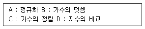
- A-B-C-D
- A-C-D-B
- D-B-C-A
- D-C-B-A
(정답률: 69%)
66. 코드화 된 2진수의 각 코드에 가중치를 두는 형태로 표시한 코드인 것은?
- 엑세스-3 코드
- 그레이 코드
- 시프트 카운터 코드
- 8421 코드
(정답률: 58%)
67. 은행, 식당 또는 버스 정류장에서 서비스를 받기 위해 줄을 서 있는 원리와 같은 자료구조는?
- 스택(stack)
- 큐(queue)
- 데크(deque)
- 배열 순례(array traversal)
(정답률: 79%)
68. 운영체제가 관리하는 자원이 아닌 것은?
- 프로세서 관리
- 기억장치 관리
- 입출력장치 관리
- 데이터베이스 관리
(정답률: 74%)
69. 다음 설명에 해당하는 것은 무엇인가?
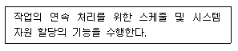
- Job Control Program
- Service Program
- Data Management Program
- Problem Processing Program
(정답률: 76%)
70. 마이크로프로세서의 정상적인 프로그램의 진행을 벗어나게 하는 여러 가지 문제들을 다루는 것을 무엇이라 하는가?
- 프로그램 인터럽트
- 버퍼링
- 백업
- 필터링
(정답률: 81%)
71. 주파수할당을 받은 자가 주파수 이용기간이 만료되어 주파수 재할당을 받으려면 주파수 이용기간 만료 몇 개월 전에 재할당 신청을 하여야 하는가?
- 1개월
- 2개월
- 3개월
- 4개월
(정답률: 60%)
72. 다음 중 무선국 개설의 결격사유가 아닌 것은?
- 대한민국 국적을 가지지 아니한 자
- 전파법을 위반하여 금고 이상의 실형을 선고 받고 그 집행이 끝나거나 집행을 받지 아니하기로 확정된 날부터 2년이 경과한 자
- 외국 정부 또는 그 대표자
- 금고 이상의 형의 집행유예를 선고 받고 유예기간 중에 있는 자
(정답률: 77%)
73. 다음 중 무선국 개설허가의 유효 기간으로 틀린 것은?
- 기지국 : 5년
- 실험국 : 1년
- 소출력방송국(초단파, 1W미만) :1년
- 항공기국 : 1년
(정답률: 74%)
74. 다음 중 전파사용료 부과를 면제할 수 있는 대상에 해당하지 않는 무선국은?
- 실험만을 위한 무선국
- 국가가 개설한 무선국
- 지방자치단체가 개설한 무선국
- 방송을 목적으로 하는 무선국 중 영리를 목적으로 하지 아니하는 무선국
(정답률: 53%)
75. 다음 중 무선설비산업기사의 기술운용 범위로 틀린 것은?
- 공중선전력 3킬로와트 이하의 무선전신 및 팩시밀리
- 공중선전력 1.5킬로와트 이하의 무선전화
- 레이더
- 공중선전력 500와트 이하의 무선전신 및 팩시밀리
(정답률: 69%)
76. 다음 중 “방송통신기기 형식검정ㆍ형식등록 및 전자파적합등록”에서 규정하고 있는 방송통신기기가 아닌 것은?
- 방송에 사용하는 기기
- 무선설비의 기기
- 전자파장해기기
- 정보통신설비의 기기
(정답률: 42%)
77. 다음 ( ) 안에 들어갈 내용으로 적합한 것은?
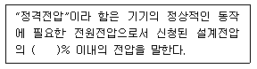
- ±2
- ±4
- ±6
- ±8
(정답률: 83%)
78. 다음 중 무선설비의 공중선전력은 ( )와트 초과시 전원회로에 퓨즈 또는 자동차단기를 갖추어야 하는가?
- 50
- 30
- 20
- 10
(정답률: 75%)
79. 다음 중 의무항공기국은 주 전원설비의 고장시 예비 전원은 항공기의 항행안전을 위하여 무선설비를 몇 분 이상 동작시킬 수 있어야 하는가?
- 10분
- 20분
- 30분
- 40분
(정답률: 75%)
80. 다음 중 무선국 시설자는 통신보안용 약호를 정한 후 누구의 승인을 얻은 수 사용하여야 하는가?
- 방송통신위원장
- 전파연구소장
- 중앙전파관리소장
- 한국전파진흥원
(정답률: 74%)